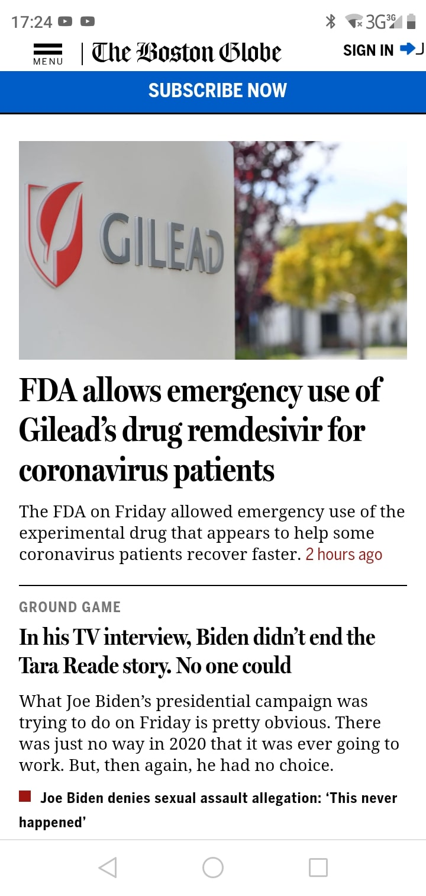

PARC: Proximity
The Boston Globe
bostonglobe.com
The importance of the Law of Proximity is that it allows people to identify "groups" of information that is related to each other. To do this, it utilizes whitespace to create distance between different groups. This picture of the Boston Globe seems to show that process quite well. They utilize whitespace so that we can separate different paragraphs and images. This helps us read their articles with relative ease.
Visual Hierarchy
Pizza Hut
pizzahut.com
Restaurants tend to be masters of Visual Hierarchy. We can see the strategy just from this small screen shot. The most prominent "visual" is the food, followed by the prices and the order buttons. You notice that the details are not as prominent as the food, prices, and order buttons. It's not that it's not as important as the other elements, let's face it, it's not in the path that they are making our eyes follow
PARC: Repitition
WITC
witc.eduConsistency helps portray a sense of unity and makes the website look cool besides. This screenshot shows part of the WITC homepage. Here they make good use of the yellow and blue colors while also maintaining good proximity.